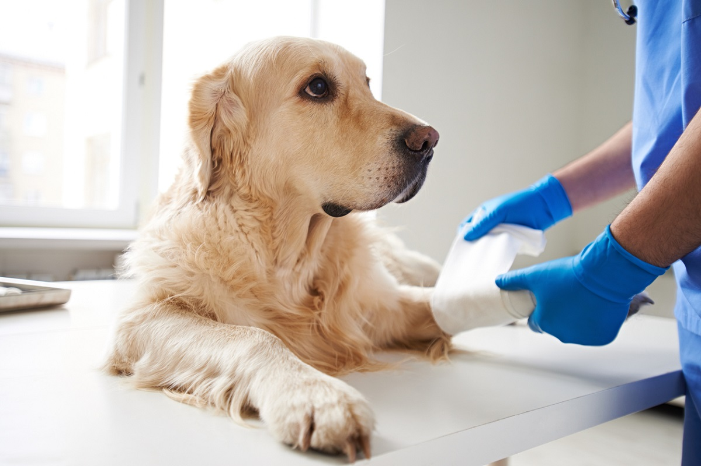
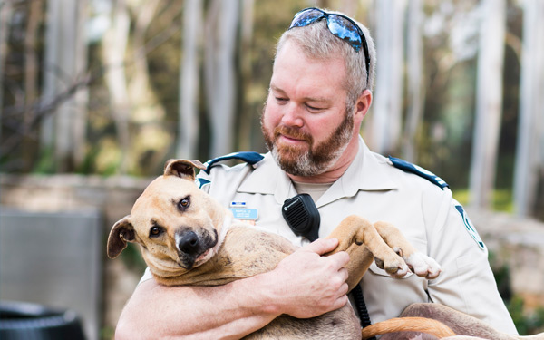
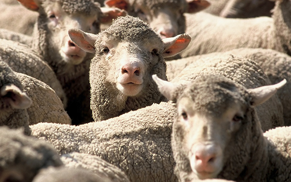
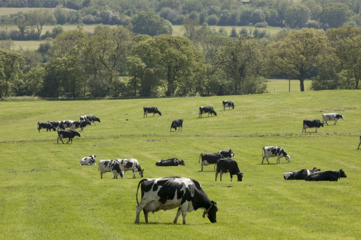

What We Do
The RSPCA in Australia is a federation, with an RSPCA in each state and territory and RSPCA Australia as the national body. The state and territory member Societies provide services to animals in need through their shelters and inspectorates.
In the national office, RSPCA Australia works to influence animal welfare policy, practice and legislation across the country. We do this through various avenues, including working with government and industries, communicating and contributing to animal welfare science, running the RSPCA Approved Farming Scheme, and working with supporters through targeted advocacy and education campaigns.
-

Our role in caring for animals
RSPCA member Societies care for animals across Australia, by rehoming neglected and unwanted animals through their shelters and by educating the community about responsible pet ownership./p>
-

Our role in enforcing the law
RSPCA member societies in each state and territory (with the exception of RSPCA Darwin) work hard every day to prevent cruelty to animals, through enforcing animal welfare legislation via their Inspectorates.
-

Our role in advocacy
The RSPCA advocates for the welfare of animals across a range of industries, environments and issues. We regularly mobilise our hundreds of thousands of supporters to call on governments and industries to prioritise animal welfare. Some of the key issues we’re currently working on are ending the suffering of millions of layer hens in battery cages, and ending the long-haul live export of sheep from Australia to the Middle East.
-

Our role in farm animal welfare
The RSPCA is committed to improving farm animal welfare, and we engage with farmers, governments and the industry to achieve this through a number of key channels. This includes the RSPCA Approved Farming Scheme, as well as liaising directly with key stakeholders to drive improvements to the conditions and standards for farm animals.